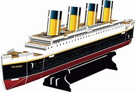

ტიტანიკის მრავალფუნქციური სტრუქტურა
პირველი კლასის საცხოვრებელი შეიქმნა კომფორტისა და ფუფუნების მწვერვალად, გიმნაზიით, საცურაო აუზით, მოსაწევი ოთახებით, მაღალი კლასის რესტორნებითა და კაფეებით, ვიქტორიანული სტილის თურქული აბანოთი და ასობით მდიდრული კაბინით. მაღალი სიმძლავრის რადიოტელეგრაფის გადამცემი ხელმისაწვდომი იყო სამგზავრო "მარკონიგრამების" გასაგზავნად და გემის ოპერატიული გამოყენებისთვის. Titanic-ს გააჩნდა მოწინავე უსაფრთხოების მახასიათებლები, როგორიცაა წყალგაუმტარი განყოფილებები და დისტანციურად გააქტიურებული წყალგაუმტარი კარები, რაც ხელს უწყობს მის რეპუტაციას, როგორც "ჩაძირვის გარეშე".
 ტიტანიკის ჩაძირვა